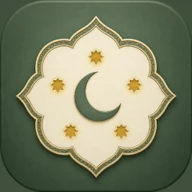

Vakit Takibim, namaz vakitlerini cihazın kendisinde astronomik olarak hesaplayan bir Flutter uygulaması. Vakitler bir sunucudan çekilmiyor; adhan_dart ile konum ve tarihten yerel olarak üretiliyor. Yani uçak modunda, yurt dışında, internetsiz bir dağ köyünde de doğru vakti gösteriyor. İnternet yalnız üç şey için kullanılıyor: hava durumu, şehir arama ve yakın camiler haritası.
Uygulamanın ikinci ekseni alışkanlık takibi. Kılınan vakitler işaretleniyor ve iki ayrı seri işliyor: günde en az bir vakitle süren normal seri ve beş vaktin tamamıyla süren Altın Seri. Her serinin haftada bir kez otomatik kullanılan bir dondurma hakkı var — bir günü kaçırmak aylık emeği silmiyor. Namaz günü gece yarısında değil imsakta dönüyor; imsaktan önce yapılan işaretlemeler önceki güne yazılıyor.
Bildirimler tarafında iş, "vakti gelince çal"dan daha derin: kesin alarmlı vakit bildirimleri, ayarlanabilir "N dakika önce" hatırlatması, gün sonunda hiç vakit işaretlenmediyse seri uyarısı ve uygulama kapalıyken de çalışması için 4 gün ileriye zamanlama. Cihaz yeniden başlatıldığında zamanlamalar bir reboot receiver ile yeniden kuruluyor.
Vakit ekranının yanında ayrı bir araç seti var: Kuran okuma, tefsir ve radyo, hatim takibi, zikirmatik, zekat hesaplama, dualar, hutbe, dini günler, hicri tarih çevirici, Esmaül Hüsna, kaza takibi ve adım adım ibadet rehberleri. Ana ekrana ise iki widget çıkıyor: haftalık noktalarla seri widget'ı ve saniye saniye işleyen vakit sayacı — ikisi de uygulamanın temasına duyarlı.